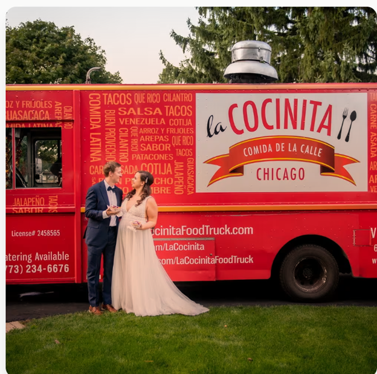
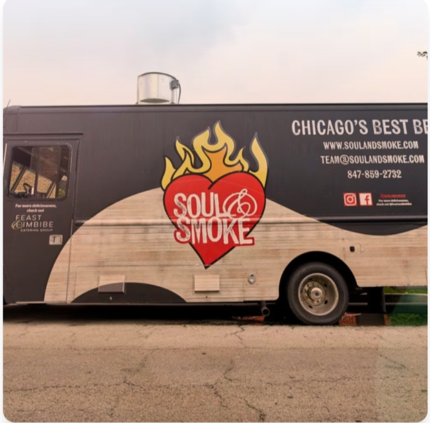
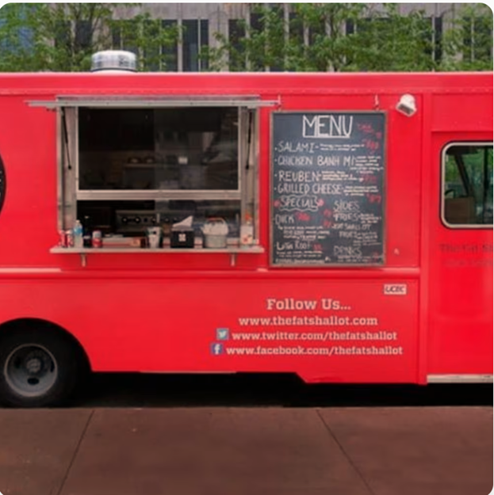
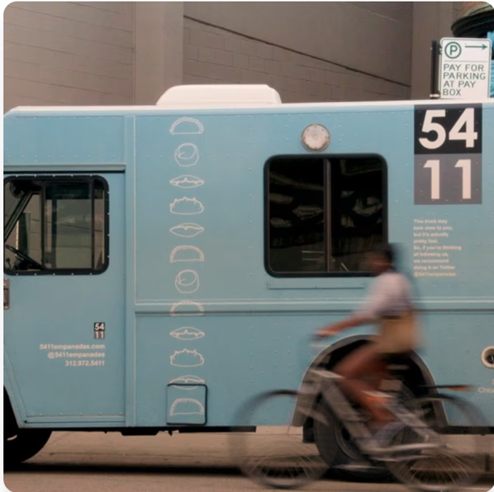

This is my external link to City of Chicago website for food trucks

La Cocinita, founded by Benoit and Rachel Angulo, is a top-tier Latin American food truck offering a delightful array of Venezuelan-inspired street food to the streets of Chicago.
Known for their gourmet taco truck offerings, La Cocinita serves up traditional dishes with a modern twist. You can often find their vibrant red truck in popular areas like the Loop and at events such as the Chicago Food Truck Festival, which is part of the vibrant Chicago food truck scene.
The menu at La Cocinita features a variety of mouth-watering options, including arepas, tacos, and bowls, each customizable with your choice of protein like braised chicken, roasted pork, or sweet potatoes and black beans.
Sauces like guasacaca, chipotle crema, and salsa verde add a burst of flavor to every bite. Don’t miss their churros, a sweet treat dusted with cinnamon sugar and served with warm chocolate sauce for the perfect ending to your meal.
La Cocinita is a must-try among Chicago street food vendors, especially for fans seeking the best arepas in Chicago or inventive Latin American bowls.
Beyond its delicious food, La Cocinita is known for its commitment to community service, having provided thousands of meals to healthcare workers and first responders during the COVID-19 pandemic.

Soul & Smoke, co-founded by Chef D’Andre Carter and Heather Bublick, is a beloved Chicago BBQ truck and gourmet soul food truck in Chicago.
Known for serving high-quality barbecue and soul food, the truck has quickly become a staple in the city’s food scene. With locations in Evanston, Avondale, Soldier Field, and the West Loop, Soul & Smoke offers a convenient and delicious dining experience for Chicagoans and fans of the West Loop food scene.
The menu at Soul & Smoke features a variety of mouth-watering dishes. Their smoked brisket and St. Louis style ribs are particularly popular, accompanied by homestyle sides like mac and cheese, braised collard greens, and creamy apple slaw.

The Fat Shallot, owned by husband-and-wife team Sam Barron and Sarah Weitz, is a renowned Chicago gourmet food truck serving Chicago since 2013.
Their high-quality, made-to-order dishes have made them a favorite, with the artisan sandwich truck frequently visiting spots like the Merchandise Mart and Revival Food Hall lunch options.
The menu at The Fat Shallot includes mouth-watering sandwiches like the Buffalo chicken sandwich, featuring crispy chicken tenders tossed in buffalo sauce with blue cheese dressing and shaved celery on a brioche bun.
Other favorites include the Truffle BLT, combining crispy bacon, avocado, arugula, tomato, and truffle aioli on challah bread, and the grilled cheese made with muenster cheese, sautéed spinach, and caramelized onions on sourdough. Their house fries, topped with options like rosemary salt or truffle aioli, perfectly complement any sandwich.
